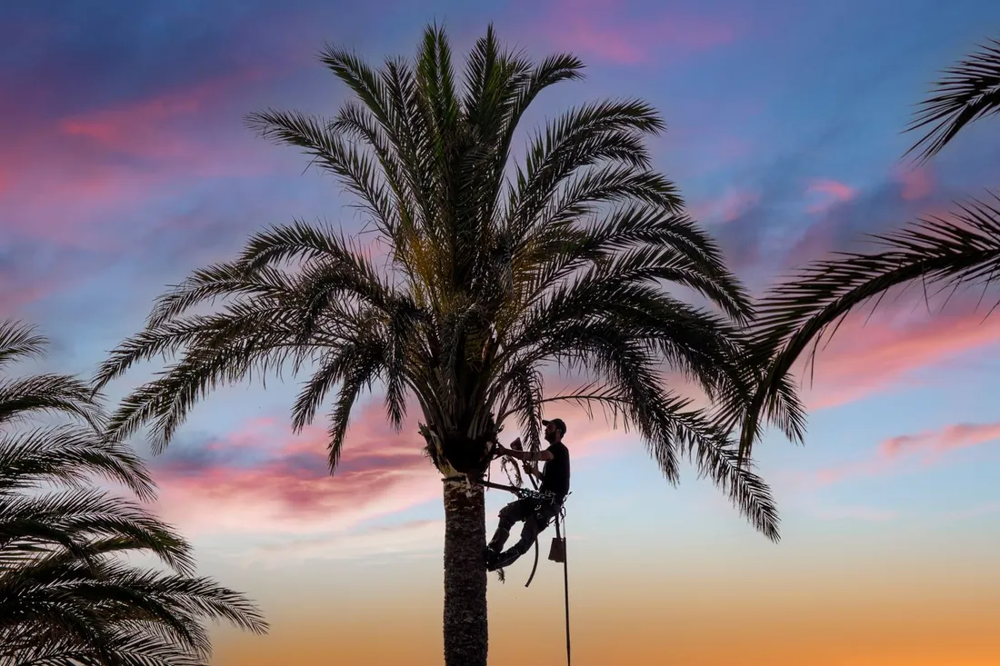

Dead fronds, seed pods and boots removed the right way — no hurricane cuts, no green fronds pulled, and a lethal bronzing check while we are up there.

Palm tree trimming in Galveston, TX is the service most often done badly, and the damage is permanent. Palms cannot heal a wound or regrow a crown, so a bad trim stays with the tree for the rest of its life. We clean sabal, Mexican fan, Canary Island date and queen palms across the island — along the Seawall, through the East End, and out into Pirates Beach, Sea Isle and Jamaica Beach — removing what is actually dead and leaving what is still feeding the palm.
Four things come off a healthy palm: fully brown fronds, flower stalks and seed pods, loose boots on species that shed them, and any dead material caught in the crown. That is the whole list.
Green fronds stay. So do yellowing ones, which sounds odd until you understand why. A yellow frond is usually a nutrient signal, most often potassium deficiency, and the palm is actively pulling what it needs back out of that leaf. Cut it off and you take the nutrient with it and lose the diagnostic evidence at the same time.
Seed pods are worth removing on the island for practical reasons. Fruit drop stains driveways and pool decks, sprouting seedlings turn into a weeding job, and a heavy pod load in a Gulf wind is unnecessary weight on the crown. On date palms we also clear the accumulated boot material, which is where rats and wasps set up.
Every spring along the Texas and Florida coast, crews sell a hurricane cut — strip the canopy back to a few fronds pointing straight up, on the theory that less surface area means less wind resistance. It looks tidy, it is quick, and the logic sounds reasonable.
It is also backwards. University of Florida research states plainly that the practice is not based in science and leaves palms less able to handle hurricane-force wind. Observations after major storms found that hurricane-cut palms were more likely to lose their crowns entirely. The remaining fronds on a full canopy shield and brace the growing point in the center. Strip them and you expose the one part of the palm that cannot be replaced.
There is a slower cost too. Repeated over-pruning produces smaller leaves and a narrower trunk over time. A palm that has been hurricane cut every year for a decade is measurably thinner where those years happened, and that pinch stays in the trunk permanently.
Cases have been climbing across the island. The disease is a phytoplasma moved by a sap-feeding insect, and it works from the bottom up: lower fronds bronze and drop, the canopy thins, and when the central spear dies the palm is finished. Canary Island date palms are especially vulnerable. Caught early, oxytetracycline injections can suppress it. Caught late, the only safe answer is removal before the crown comes down on its own. We check for it on every palm we climb, at no extra cost.
| Palm | Typical range | Notes |
|---|---|---|
| Sabal or small palm, ladder height | $100 – $175 | Quick single-visit job |
| Mexican fan palm, 25–40 ft | $150 – $300 | Climber or lift required |
| Canary Island date palm | $250 – $350 | Heavy fronds, spines, boot work |
| Neglected palm, 3+ years growth | +$75 – $150 | Extra debris and time |
| Multiple palms, same visit | 10–25% off per palm | One setup, one haul |
| Dead palm removal | $300 – $900 | Depends on height and access |
Height drives the price because it decides the equipment. Species matters next: a date palm carries several times the frond weight of a sabal and the spines slow every movement. Access is the third factor — Seawall-side properties and tight West End lots often have no room for a lift, which puts a climber on the trunk. Debris volume is the last one, and it is why skipping years costs more in the end.
Trimming is enough when the crown is full and green, the spear at the center is firm and upright, and the only issue is dead fronds, pods or boots. Almost every palm we look at falls here. A neglected palm is not a dying palm, it is a dirty one, and one visit fixes it.
Removal is the honest answer when the central spear has died, when the canopy has thinned from the bottom up over a season or two with bronzing symptoms, or when the trunk has soft rot at the base. Palms do not recover from a dead spear. A dead palm also gets more dangerous over time, because the trunk fibers weaken and the whole crown can come off in one piece. If we find that, we will tell you straight and quote the palm removal in Galveston rather than take money for a trim that changes nothing.
No. University of Florida horticulturists are direct about it: hurricane cutting is not rooted in science and makes palms less able to withstand hurricane-force winds. After storms, hurricane-cut palms were more likely to have their crowns snapped off than palms left with a full canopy. The fronds are what stabilize the crown, not what endangers it.
Picture the canopy as a clock face. Nine and three o'clock is the absolute limit, and that is a limit rather than a target. A properly trimmed palm keeps a round, full head with green fronds hanging below horizontal. Only fully brown fronds should come off, along with seed pods and loose boots.
Lethal bronzing is a phytoplasma disease spread by a sap-feeding insect, and cases have been rising on Galveston Island. Lower fronds bronze and collapse, the canopy thins, and once the central spear dies the palm cannot be saved. Canary Island date palms are among the most susceptible. Oxytetracycline injections can suppress it in palms caught early.
Most residential palms run $100 to $350 each. Height is the main factor: a sabal palm you can reach from a ladder is at the low end, while a tall Canary Island date palm or Mexican fan palm that needs a climber or a lift is at the high end. Trimming several palms on one visit brings the per-palm price down.
Once a year for most Galveston palms, timed for after the seed pods form so they can come off in the same visit. Canary Island date palms often need it twice a year because of the volume of fruit. Skipping years does not save money, since a palm with four years of dead fronds and boots takes far longer to clean up.
One visit takes off the dead fronds, the pods and the boots — and leaves the palm with the canopy it needs to survive the next storm.
Call (409) 255-0582 for a Free Estimate